Community Over Code · Glasgow 2026
WireGuard for Apache NuttX
Bringing Secure Remote Access to Embedded Devices
Satoru AkitaSony Semiconductor Solutions
About Me
Satoru Akita — edge AI engineer at Sony Semiconductor Solutions, working with Apache NuttX from the application side.
Japan
My background & activities
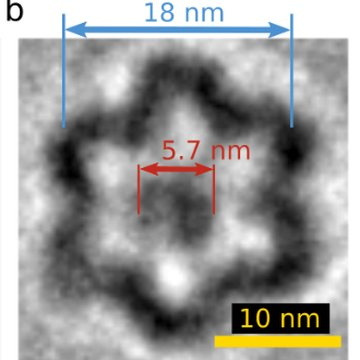
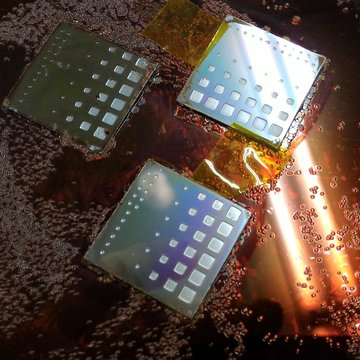
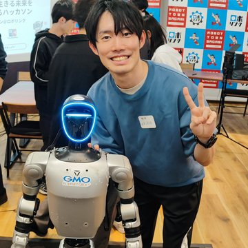
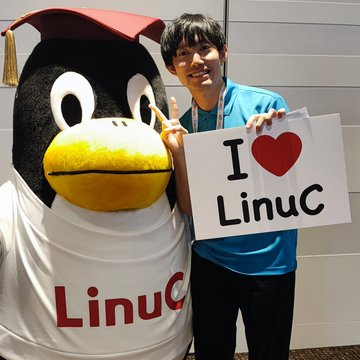
Agenda
Overview & background
What NuttX is · how this started
The Problem & Solution
Remote access · options · a VPN on the device
The Development Plan
Start from wireguard-lwip · fit it to NuttX
Version 1: Application-Based Implementation
First tunnel · six bugs, two in detail · first demo
Version 2: The Kernel Driver
Why a driver · design · issues found · testing
Live Demo
Stack-chan over WireGuard
Summary & Reflections
What we built · what I learned · thanks
Agenda
Overview & background
What NuttX is · how this started
The Problem & Solution
Remote access · options · a VPN on the device
The Development Plan
Start from wireguard-lwip · fit it to NuttX
Version 1: Application-Based Implementation
First tunnel · six bugs, two in detail · first demo
Version 2: The Kernel Driver
Why a driver · design · issues found · testing
Live Demo
Stack-chan over WireGuard
Summary & Reflections
What we built · what I learned · thanks
Project Overview
Bring WireGuard to NuttX-based microcontrollers.
Use wg0 as a network interface for the VPN tunnel.
Exchange encrypted packets with WireGuard peers over UDP.
NuttX devices can now talk IP securely, like any other WireGuard peer.
How it started
The GSoC proposal was not selected, but the work went on.
Background: What Is Apache NuttX?
- POSIX-like real-time OS
- Small footprint
- Broad hardware support15+ CPU architectures · 300+ boards
- Apache open-source project
| RTOS | Standard APIs |
|---|---|
| FreeRTOS | Its own task API |
| Zephyr | Own API, optional POSIX layer |
| NuttX | POSIX-like by design |
Used in real devices
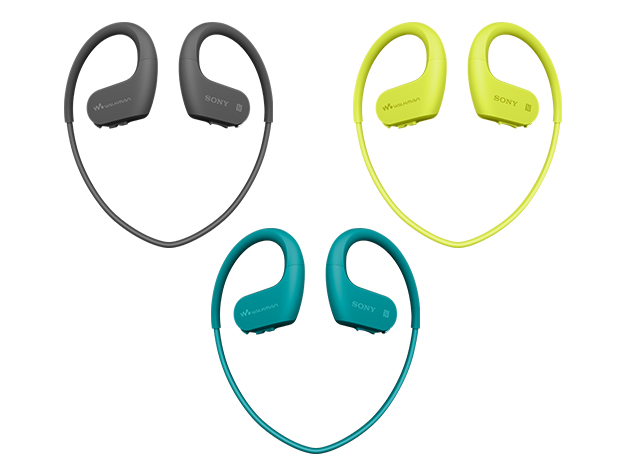
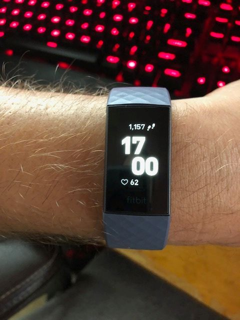
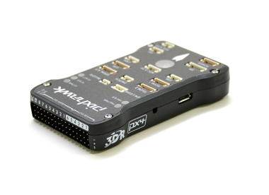
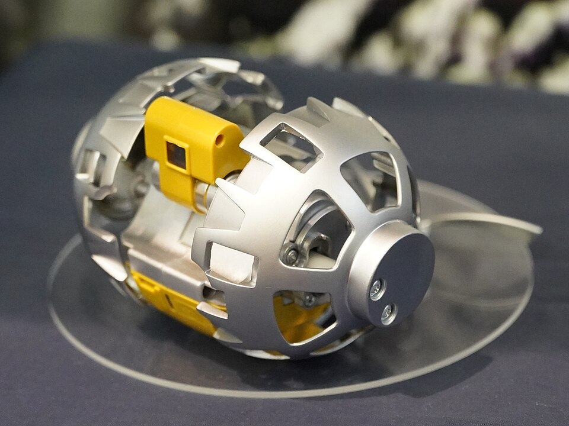
Apache NuttX is a POSIX-like RTOS used in a wide range of real-world embedded devices.
Sony's history with NuttX
Early adoption
Ported NuttX to LC823425 / LC823450; first commercial audio products shipped in 2015.
Commercial products
Walkman NW-WS620, SMR-10, ICD-TX800 and ICD-PX470 used NuttX.
Xperia Ear Duo & SPRESENSE
Xperia Ear Duo shipped with CXD5602 / NuttX; SPRESENSE launched as a multicore development board.
Upstream collaboration
Sony engineers upstreamed CXD56xx platform support and drivers, and shared the work in public NuttX talks.
Edge sensing
Expanded camera, GNSS, connectivity and edge-sensing capabilities.
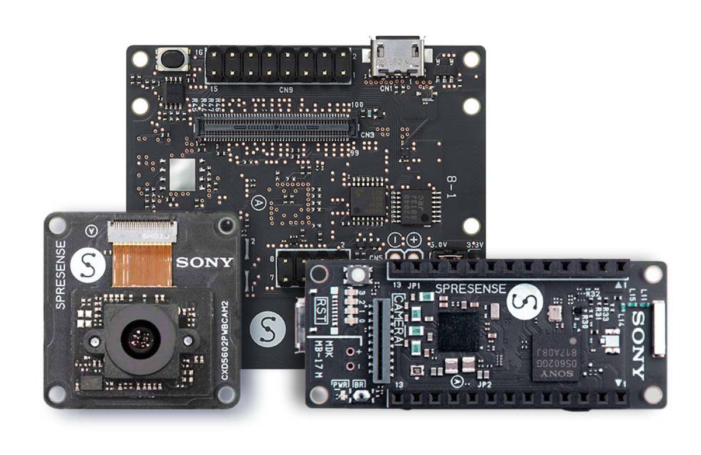
Sony's NuttX journey began with audio products, expanded through SPRESENSE, and evolved into long-term open-source collaboration.
My Experience with NuttX
SPRESENSE — Satellite Project
Sony's low-power board, the on-board computer of the ARICA-2 CubeSat (Aoyama Gakuin University, launched April 2026).
I took part through an internal, grassroots engineering initiative.
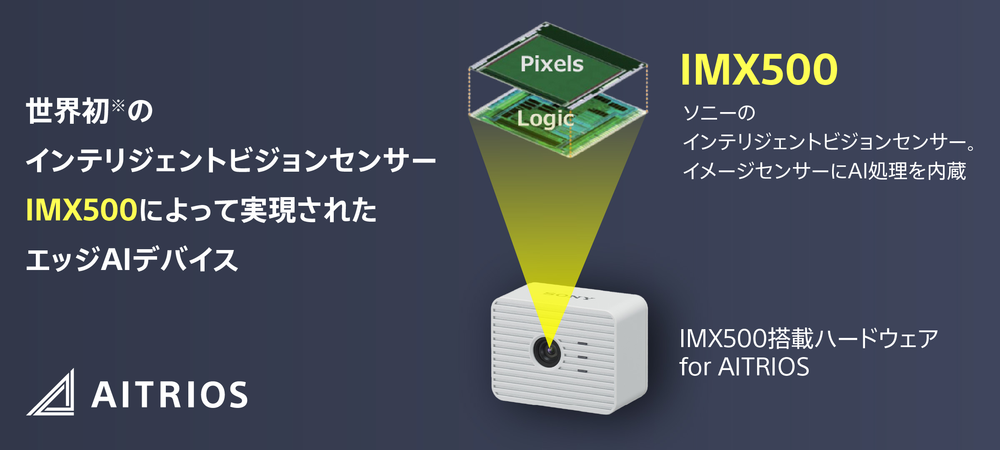
AITRIOS — Edge AI Sensing Platform
Sony's platform for managing edge AI cameras and running inference on them.
I worked on setting up and operating camera systems that use ESP32 and Apache NuttX.
I wanted a secure way to access and troubleshoot remote embedded devices.
Agenda
Overview & background
What NuttX is · how this started
The Problem & Solution
Remote access · options · a VPN on the device
The Development Plan
Start from wireguard-lwip · fit it to NuttX
Version 1: Application-Based Implementation
First tunnel · six bugs, two in detail · first demo
Version 2: The Kernel Driver
Why a driver · design · issues found · testing
Live Demo
Stack-chan over WireGuard
Summary & Reflections
What we built · what I learned · thanks
Problem: How Can We Securely Access Remote Devices?
Embedded devices sit at remote sites and on other networks.
Engineers need to check and fix them when something goes wrong.
Wi-Fi security protects the radio link. Remote access needs its own secure path.
We needed a secure way to access and troubleshoot remote NuttX devices.
Options: Ways to Reach a Remote Device
| Way | Any IP service (telnet, web…)? | No server in the middle? | Protected up to |
|---|---|---|---|
| Open a port to the Internet | yes | yes | the application itself |
| HTTPS / MQTT via a cloud | no, only your API or messages | no, a server or broker | the server or broker |
| Reverse tunnel / relay (SSH, WebSocket) | one port per tunnel | no, a relay host | the relay host |
| VPN on the router | yes, the whole LAN | yes | the router, not the LAN behind it |
| Carrier closed network | yes | no, the carrier | the carrier gateway |
| VPN on the device (this talk) | yes, any IP service | yes, any WireGuard peer | the device itself |
Every option has trade-offs. I chose a VPN on the device, so the device itself is the end of the tunnel.
Solution: A VPN on the Device
Why WireGuard?
Far less code than IPsec or OpenVPN, so it is easier to review and to port.
ChaCha20-Poly1305 and Curve25519, in one fixed, well-defined suite.
Encrypted IP packets over UDP. It works with existing WireGuard peers such as Linux, and the microcontroller itself is the VPN endpoint.
Run a lightweight, standard VPN directly on the NuttX device.
Architecture: where wg0 sits
To NuttX, wg0 is a normal network device. Under it, WireGuard turns its packets into encrypted UDP.
Agenda
Overview & background
What NuttX is · how this started
The Problem & Solution
Remote access · options · a VPN on the device
The Development Plan
Start from wireguard-lwip · fit it to NuttX
Version 1: Application-Based Implementation
First tunnel · six bugs, two in detail · first demo
Version 2: The Kernel Driver
Why a driver · design · issues found · testing
Live Demo
Stack-chan over WireGuard
Summary & Reflections
What we built · what I learned · thanks
Porting Strategy: Start from wireguard-lwip
Protocol & crypto
Reuse the WireGuard protocol and cryptography, with two small fixes.
Platform hooks
Implement NuttX-specific system functions.
lwIP network glue
Use NuttX networking APIs instead of lwIP.
We ported wireguard-lwip to NuttX by reusing the core, adapting platform hooks, and replacing the lwIP integration.
Mapping lwIP Networking to NuttX
| Concept | lwIP | NuttX |
|---|---|---|
| Network device | struct netif | struct net_driver_s |
| Packet buffers | pbuf | iob (d_iob) |
| Registration | netif_add() | netdev_register() |
| Sending | output callback | d_txavail → devif_poll() |
| UDP “wire” | udp_pcb, udp_sendto() | UDP socket, psock_sendto() |
These are matches of ideas, not a one-to-one swap of APIs.
Porting meant using NuttX's own building blocks, not bringing lwIP into NuttX.
Agenda
Overview & background
What NuttX is · how this started
The Problem & Solution
Remote access · options · a VPN on the device
The Development Plan
Start from wireguard-lwip · fit it to NuttX
Version 1: Application-Based Implementation
First tunnel · six bugs, two in detail · first demo
Version 2: The Kernel Driver
Why a driver · design · issues found · testing
Live Demo
Stack-chan over WireGuard
Summary & Reflections
What we built · what I learned · thanks
Version 1: WireGuard as a NuttX application
GOAL
Run a standard WireGuard tunnel as a NuttX application.
Reuse the existing core and implement the NuttX integration.
| Layer | Work needed | In this port |
|---|---|---|
| Protocol & crypto | Almost noneportable C | Crypto byte-identical. Two small fixes to the protocol core.~3,100 lines reused · ~40 changed |
| OS hooks | Four functionssmall | clock, /dev/urandom, TAI64N, load check~120 new lines |
| Network glue | The real work | netdev + UDP socket + RX task~1,200 new lines |
Version 1 proved that WireGuard could run on NuttX.It also exposed OS and networking problems that the first tunnel did not reveal.
Where it was hard: six bugs
| # | Bug | Showed up in | Lesson |
|---|---|---|---|
| 1 | The receive thread stopped when the wg command exited | apps version | pthread_detach() frees memory later. It does not keep a thread alive. |
| 2 | ping works, TCP dies in detail | apps version | A file descriptor belongs to one task group. |
| 3 | “No real impact” was 10× in detail | apps version | Measure a quick fix before you call it free. |
| 4 | Stack 94% full; saving the config froze the board | real boards only, never sim | Measure on real hardware. Sim's big stacks hide it. |
| 5 | Handshake OK, data fails: NuttX's own ChaCha20‑Poly1305 part 5 | kernel driver | A passing handshake does not prove the data path. |
| 6 | A 6 KB array on a 3 KB kernel stack part 5 | BUILD_KERNEL (QEMU) | The same stack lesson, one level deeper. |
Most of them hid behind a test that passed, so I first looked in the wrong place.
Bug ②: Ping Works. TCP Dies.
ping works: 0% loss.
A TCP handshake even completes, then the connection dies.
psock_sendto: ret=-1 errno=9
EBADF — “Bad file descriptor”
Sends from the wg_rx task worked. Sends from the system work queue, which flushes TCP data, failed.
Cause: a file descriptor belongs to one task group. It is not valid in another one.
Fix: use psock_*() on a struct socket. No fd, so any task can use it.
If only some tasks fail, look at what each task owns. Here, it was the file descriptor.
Bug ③: “No Real Impact” Was 10× Slower
Check every 50 ms
Dropping fds also broke poll(), so I polled the socket. I thought the only cost was waking an idle CPU.
Measured: about 10× slower.
Event-driven wake-up
A callback on psock_poll() and a semaphore: a real blocking wait. Each packet wakes the thread when it arrives.
A quick fix you never measure can look free. Measure it.
Version 1 demo: the first video
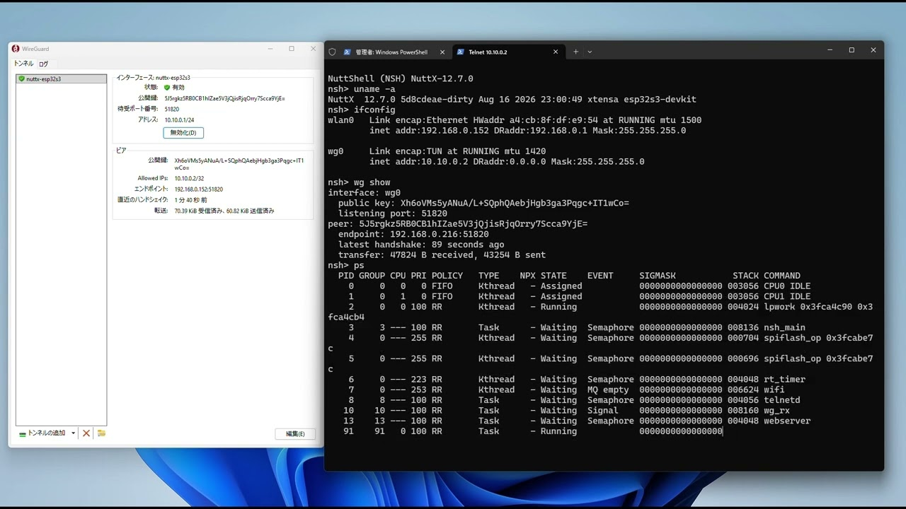
1 telnet 10.10.0.2
2 uname -a, ifconfig
3 webserver &
4 browser: http://10.10.0.2/
ESP32-S3 DevKit, apps version (FLAT). USB unplugged.
Other end: the official Windows WireGuard client.
Video: youtu.be/1kyX2av5WG4
Version 1 was enough for a demo. Next, I made it a real NuttX driver.
Agenda
Overview & background
What NuttX is · how this started
The Problem & Solution
Remote access · options · a VPN on the device
The Development Plan
Start from wireguard-lwip · fit it to NuttX
Version 1: Application-Based Implementation
First tunnel · six bugs, two in detail · first demo
Version 2: The Kernel Driver
Why a driver · design · issues found · testing
Live Demo
Stack-chan over WireGuard
Summary & Reflections
What we built · what I learned · thanks
Version 2: WireGuard as a NuttX kernel driver
An application
Lives in apps/ and reaches into kernel internals (psock_*).
Works only in a FLAT build, and does not fit as an in-tree driver.
A kernel driver
wg0 lives in drivers/net/wireguard/. A small wg command sets it up through ioctl.
Made for FLAT, PROTECTED and KERNEL builds.
BUILD MODES
| FLAT | Applications and kernel share one address space. |
| PROTECTED | MPU separates application and kernel memory. |
| KERNEL | MMU provides separate address spaces. |
The goal: a proper kernel driver for every NuttX build mode, in a form that is easier to review upstream.
The Kernel Design: The Big Picture
The driver owns everything that must keep running. The command only sends settings, and then it can exit.
Two Issues Found During Kernel Integration
NuttX crypto/chachapoly.c
- The nonce counter sits in different bytes from the RFC 8439 / WireGuard layout.
- Counter 0 still matches: the handshake works, but data packets after the first fail.
- A two-line fix with test vectors, kept as its own change.
This driver, KERNEL build only
- Setting the peers put a 6 KB array on a 3 KB kernel stack: overflow, then panic.
- The sim (FLAT, big stacks) never showed it.
- A bug in the driver itself. The array now lives on the heap.
Porting WireGuard also surfaced findings worth sharing with the NuttX community.
Testing: What Ran Where
| Build mode | Environment | Result |
|---|---|---|
| FLAT | ESP32-S3 · SPRESENSEreal boards | ✓ Verified |
| KERNEL | QEMU rv-virttunnel to Linux; 4 CPUs under load | ✓ Verified |
| PROTECTED | QEMU rv-virtone fault found and fixed: 20/20 runs | ✓ Verified |
| KERNEL / PROTECTED | Real hardware | — Not tested yet |
✓ means it passed in the conditions noted here. It is not a guarantee for other hardware.
Verified on real boards in FLAT builds and on QEMU in KERNEL / PROTECTED builds.Real-hardware testing for those modes remains open.
Agenda
Overview & background
What NuttX is · how this started
The Problem & Solution
Remote access · options · a VPN on the device
The Development Plan
Start from wireguard-lwip · fit it to NuttX
Version 1: Application-Based Implementation
First tunnel · six bugs, two in detail · first demo
Version 2: The Kernel Driver
Why a driver · design · issues found · testing
Live Demo
Stack-chan over WireGuard
Summary & Reflections
What we built · what I learned · thanks
Live Demo: Stack-chan over WireGuard
NETWORK SETUP
LIVE DEMO STEPS
| Step | What to demonstrate | Command / Action |
|---|---|---|
| 1 | VPN Connection | wg show |
| 2 | Remote Login | telnet 10.10.0.2 |
| 3 | Network Interface | ifconfig → wg0 |
| 4 | Control Stack-chan | Change face / Play voice |
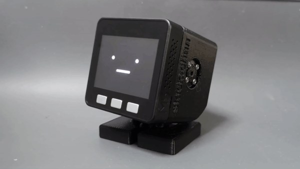
Stack-chan Open-source palm-sized robot github.com/meganetaaan/stack-chanAgenda
Overview & background
What NuttX is · how this started
The Problem & Solution
Remote access · options · a VPN on the device
The Development Plan
Start from wireguard-lwip · fit it to NuttX
Version 1: Application-Based Implementation
First tunnel · six bugs, two in detail · first demo
Version 2: The Kernel Driver
Why a driver · design · issues found · testing
Live Demo
Stack-chan over WireGuard
Summary & Reflections
What we built · what I learned · thanks
Summary
Secure Communication
Brought WireGuard to Apache NuttX, enabling secure IP communication with standard WireGuard peers.
Application to Kernel Driver
Evolved the implementation from a NuttX application into a kernel network driver, tested on real boards and QEMU.
Toward Upstream Contribution
Preparing the driver and related fixes for review by the Apache NuttX community.
Prepared as small, separate changes. Nothing is submitted yet.What I learned
From application user to OS contributor
For years I used NuttX from the application side.
This time I worked inside the OS: drivers and the kernel.
AI helped me code, but understanding was my job
I used Claude a lot. Research and code went much faster.
OS internals were new to me. I did not take AI code as it was. I asked, read, and tested until I could explain it myself.
That was the hard part.
A welcoming open-source community
Good docs and contributing guides. Active discussion and review.
Open to AI-assisted development, with people staying responsible.
CI, hackathons and events help new people join.
I hope to keep contributing to Apache NuttX and the open-source community, and I look forward to seeing NuttX continue to grow.
Acknowledgements
Community Over Code · Glasgow 2026
Thank You — Questions?
Questions welcome — the kernel driver, the bugs, or the hardware.
Satoru Akita · Sony Semiconductor Solutions
Testing: What Ping Misses
SPRESENSE 3 resets, 3 different keys.
A quick check, not a proof of good randomness.
sim session keys all zero after down.
The static key stays, on purpose, so up works again.
sim 151 rekeys, 100 down/up: nothing lost.
Memory back to the start-up count. Not a week-long run.
Each risk needs its own test. A passing tunnel is not one of them.
Design Choice: Trust the Clock?
Each handshake needs a newer timestamp than the peer has seen, even after a reboot.
Chosen
Real-time clock + the highest value used this boot. Same rule as Linux and wireguard-go, plus a warning when the clock was never set.
Not chosen
Save every timestamp: wears out flash.
Reserve a range in flash: needs a write guarantee I could not verify.
Wait: as long as it last ran.
Same board, nothing sent to it: clock unset → no handshake in 75 s. Clock set → 4.1 s.
Without a clock, a device may not reconnect by itself, and a ping test will not show it.